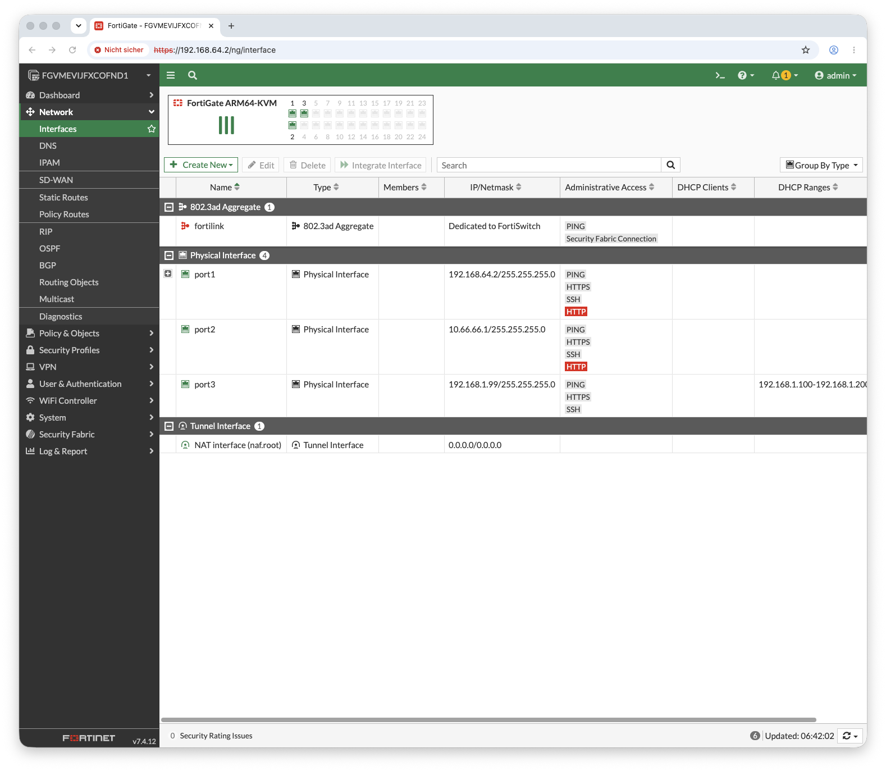

Das Ziel
Im vorherigen Beitrag lief die FortiGate-VM nativ auf Apple Silicon. Jetzt fehlt der zweite Baustein: ein Client im LAN, hinter der Firewall, dessen gesamter Verkehr durch die FortiGate geroutet, ge-NAT-et und inspiziert wird — die Voraussetzung für IPS-, AV- und Web-Filter-Tests.
Warum der Kali-Installer scheiterte
Der naheliegende Plan — Kali aus dem ARM64-Installer-ISO installieren — lief in einen Stolperstein nach dem anderen. Lehrreich, aber eine Sackgasse:
| EBENE | PROBLEM |
|---|---|
| Display | Der Installer-Kernel-Framebuffer rendert nie (weder unter hvf noch TCG) — nur GRUB erscheint, danach schwarz |
| Serielle GRUB | UTMs edk2 gibt seriell aus, nimmt aber keine GRUB-Tastatureingabe an |
| Direkter Kernel-Boot | -kernel hat keine UEFI-Umgebung → grub-installer kann auf ARM64 keinen Bootloader setzen |
| macOS-Host | kann ext4 nicht mounten → Kernel/Initrd aus dem fertigen Image nicht extrahierbar |
Die Einsicht: Ein interaktiver OS-Installer ist in einer headless QEMU/UTM-Umgebung auf Apple Silicon der schwierigste Weg. Cloud-Images dagegen sind genau dafür gebaut: direkt bootbar, serielle Konsole an, Konfiguration via cloud-init. Und: Kali = Debian + Security-Tools — die Tools liegen alle in den Debian-Repos.
Der Pivot: Debian-Cloud-Image + cloud-init
Statt zu installieren wird ein fertiges Debian-12-ARM64-Cloud-Image (qcow2) direkt gebootet. Konfiguriert wird es über ein NoCloud-Seed-ISO (cloud-init): Benutzer, Passwort, SSH und die gewünschten Tools — alles automatisch beim ersten Boot.
Das Seed-ISO entsteht auf dem Mac mit Bordmitteln (Label cidata, das cloud-init sucht):
Warum eigenständiges QEMU statt UTM
Der Client läuft bewusst in einem per Homebrew installierten QEMU (brew install qemu),
nicht in UTM. Zwei harte Gründe:
UTM splittet zusätzliche QEMU-Argumente an Leerzeichen — ein mehrwortiges -append oder -kernel-Pfad lässt sich nicht sauber übergeben.
UTMs Sandbox blockiert Dateizugriff für eigene -kernel-Pfade, und seine edk2-Firmware bedient die serielle Konsole nicht. Homebrews edk2 (edk2-aarch64-code.fd) hingegen schon.
Das fehlende Bindeglied: QEMU Socket-Networking
Jetzt die Kernfrage: Wie verbindet man zwei VMs zu einem isolierten L2-Segment, hinter dem die
FortiGate als alleiniger Router/DHCP agiert? UTMs „Emulated"-Modus ist intern QEMU user
(SLIRP) — pro VM isoliert, verbindet also keine zwei VMs. Die Lösung ist QEMUs
socket netdev: eine Seite lauscht, die andere verbindet — beide NICs hängen dann am selben
virtuellen Switch.
Der Trick mit UTM: Socket-Argumente enthalten keine Leerzeichen
(socket,id=lan,listen=127.0.0.1:4700), überleben also UTMs
Whitespace-Split. Und ein TCP-Socket ist kein Dateizugriff — die Sandbox erlaubt ihn. So bekommt die
UTM-FortiGate eine dritte NIC, die auf einen lokalen Port lauscht.
Reihenfolge zählt: Die FortiGate (UTM) muss laufen und auf :4700
lauschen, bevor der Client-QEMU startet — sonst schlägt connect fehl.
FortiGate-Seite: port3 als LAN
Die neue NIC erscheint als port3. Sie bekommt die LAN-Konfiguration (IP, DHCP-Server,
Policy) — verschoben vom ungenutzten SLIRP-port2:
Stolperstein: Subnets overlap — erst die alte
IP von port2 entfernen/ändern, dann 192.0.2.99 auf port3 setzen. Sonst lehnt FortiOS die doppelte IP ab.
Verifikation
Frames fließen (L2 funktioniert), der Client bekommt eine statische IP via netplan und sein Verkehr geht durch die FortiGate ins Internet — inspiziert:
Damit ist die Grundlage gelegt: jedes Paket des Clients passiert die LAN→WAN-Policy mit NAT — bereit für IPS-, AV- und Web-Filter-Übungen.

Abb. 1 — FortiGate Interfaces: port1 (WAN/Mgmt, UTM Shared), port3 (LAN, QEMU-Socket zu Debian-Client) — Traffic fließt durch die Firewall inspiziert
Erkenntnisse
Headless auf Apple Silicon: ein direkt bootbares Cloud-Image + cloud-init schlägt jeden interaktiven Installer.
Für rohe QEMU-Argumente, eigene Firmware und Datei-Boot ist eigenständiges QEMU (brew) der saubere Weg.
UTMs „Emulated" ist isoliertes SLIRP. Ein echtes VM-zu-VM-L2 entsteht nur über QEMU socket netdev (listen/connect).
UTM splittet Argumente an Leerzeichen — socket-Argumente ohne Spaces passieren; ein TCP-Socket umgeht die Sandbox.
Skripte & Konfiguration auf GitHub: cloud-init-Seed, QEMU-Startskripte, FortiGate-CLI und der Lab-Launcher sind dokumentiert. → fortigate-vm-lab-apple-silicon